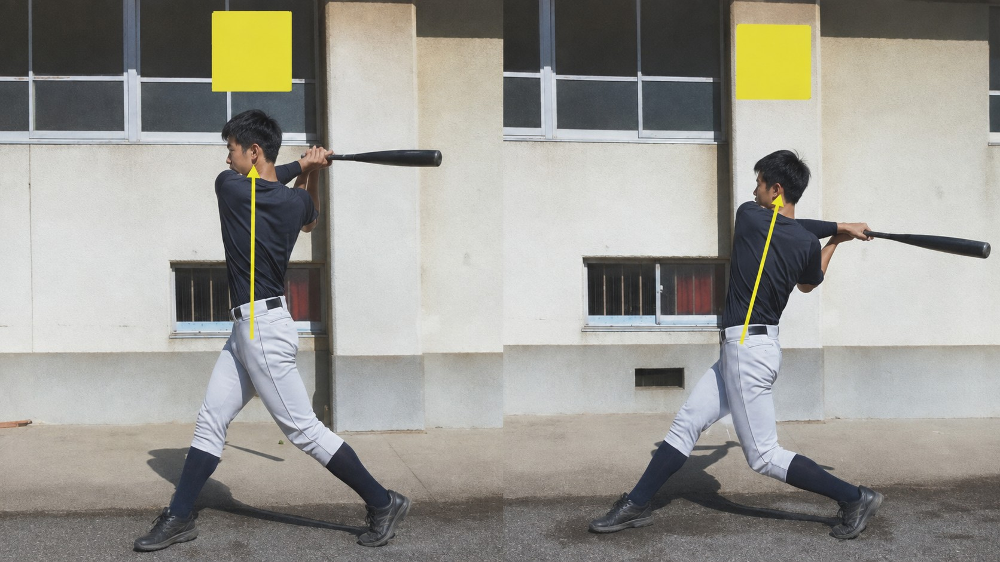
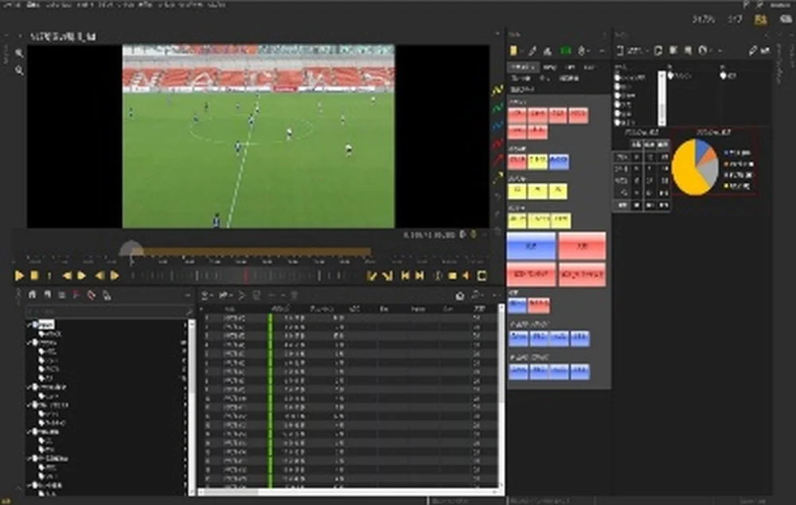
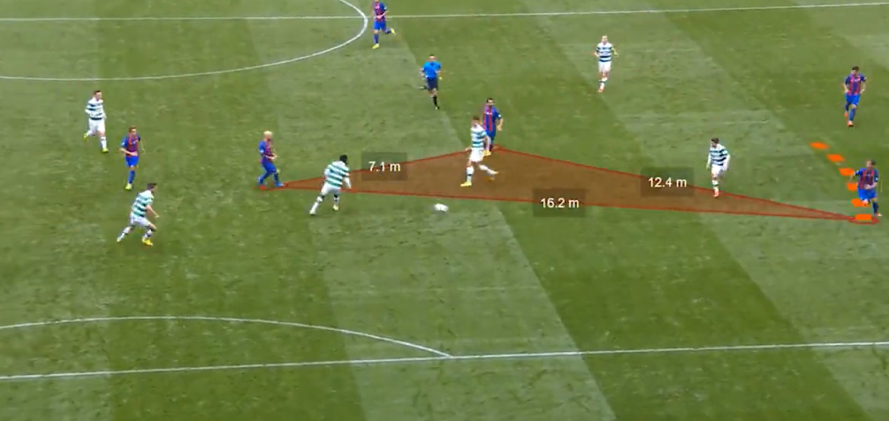
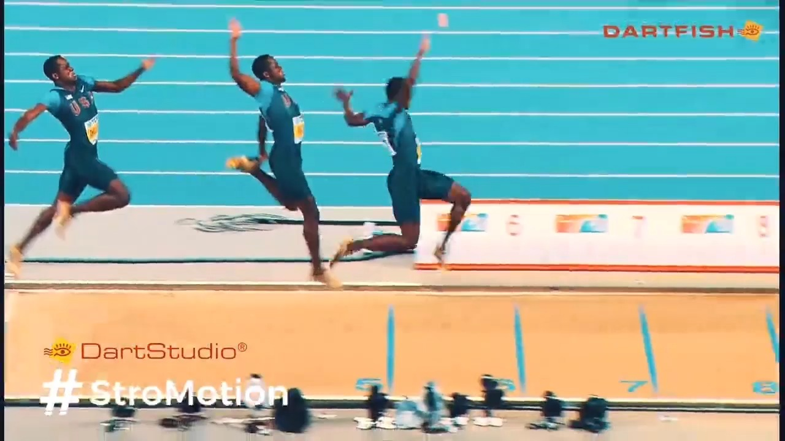
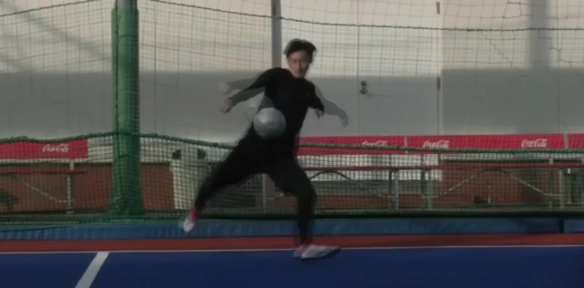
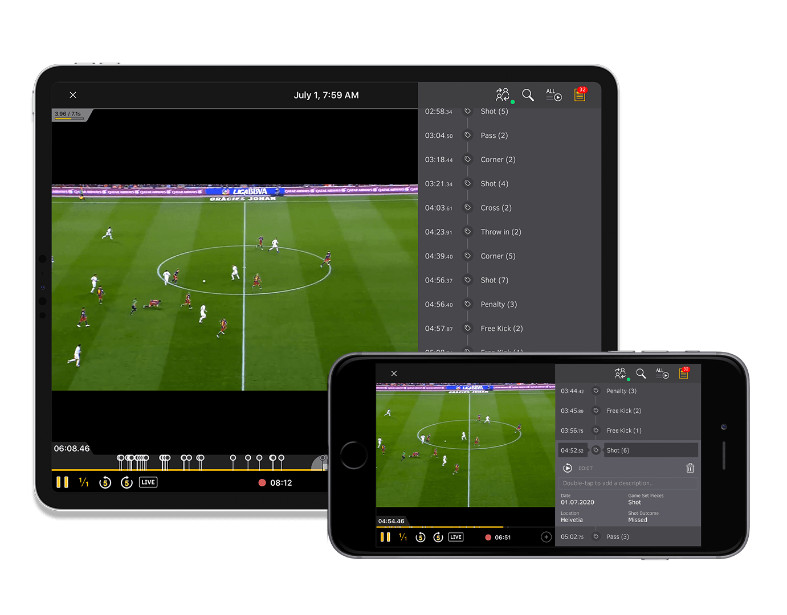

撮影
練習・試合の映像を取り込み、録画しながら見返します。
- 動画ファイルの取り込み
- ライブ録画・タイムシフト
- 複数カメラの映像
いつもの練習を撮り、同じ場面を見ることから始めます。
練習・試合の映像を取り込み、録画しながら見返します。
フォームを比較したり、プレーを分類・集計したりできます。
注目する場面や分析内容を、選手・指導者に届けます。
過去の映像との比較や、動作の姿勢・角度・タイミングの確認に。

着地やインパクトなど、短い動作を止めて確認します。
映像を並べ、角度や時間を測り、線やコメントを加えます。
映像を重ねる合成表示と、一連の動きを残す残像表示を使えます。
部活動での例 陸上の走動作、野球のスイング、バレーボールの跳躍、剣道の構え・足さばき。
プレーの種類や選手、結果などを記録し、映像と一緒に振り返ります。

得点、失点、技などにタグを付け、条件に合う場面を呼び出します。
記録したイベントを集計し、確認したい場面をまとめます。
アニメーション効果を利用した分析で、重要なシーンをより具体的に、わかりやすくハイライトできます。また、位置・速度・加速度・距離など、3D分析から正確な測定値とデータを表示できます。

3Dアナライザーの動画を別画面で開く部活動での例 バレーボールのサーブ・レセプション、サッカーの攻守、剣道・柔道の攻防と技の場面。
再生ボタンから、動きの見え方をご覧いただけます。

映像の重ね合わせや残像表示で、動作の違いと流れを確認します。
動画を別画面で開く（約54秒）
競技の動きを映像で見返す、分析の使用イメージです。
動画を別画面で開く（約42秒）このPDFでは動画の一場面を掲載しています。動画再生はLPでご確認いただけます（LPは公開準備中）。
練習や試合で確認したいことに合わせて、使う機能を選べます。
| 用途 | 機能 | できること |
|---|---|---|
| 撮影 | 映像取り込み・ライブ録画 | 撮影済みの動画やカメラ映像を取り込む |
| タイムシフト・複数カメラ | 録画を続けながら見返す。最大4カメラの映像を扱う | |
| ライブコラボレーション | iPad・iPhoneで、撮影中の映像をリアルタイム再生・遅延再生できる | |
| 動作分析 | スロー・コマ送り・2画面比較 | 短い動作や、2つの動きの違いを確認する |
| 計測・描画 | 角度・時間などを測り、映像に線や説明を加える | |
| サイマルカム・ストロモーション | 比較映像の合成や、動きの残像表示を行う | |
| ゲーム分析 | タギング・検索・集計 | プレーを分類し、条件ごとに映像と記録を見返す |
| 3Dアナライザー | アニメーションで重要なシーンを強調し、位置・速度・加速度・距離などの測定値とデータを表示する | |
| 共有 | クラウド共有・レポート作成 | 分析映像や説明をまとめ、選手・指導者に共有する |
カメラ接続、同時録画、ライブ共有には対応機器・ネットワークの準備が必要です。計測には映像に応じた基準設定を行います。学校の環境に合わせて構成をご案内します。
機能の詳細：ダートフィッシュ・ジャパンの商品紹介
練習の合間に、iPadで共有された映像を見返す。選手と指導者が同じ場面を見ながら、動きのポイントや改善点を確認し、次の練習につなげます。

同じ機能でも、競技に合わせて比較する動作や分類する場面が変わります。
走る・跳ぶ・泳ぐ動きをスロー再生し、過去の映像と比較します。
動作の比較に加え、サーブや打球などを分類して見返します。
攻撃・守備の場面を整理し、選手の配置や連係を確認します。
動作を比較しながら、間合いや技を出すタイミングを確認。試合では攻防の場面を分類します。
競技と、興味のある活用方法について教えてください。学校訪問、オンラインデモ、トライアルなど対応可能です。
選手の課題やチームに合わせた活用方法をご提案いたします。
ダートフィッシュ・ジャパンの最新ニュース、製品情報、活用事例を公式サイト・SNSでご紹介しています。